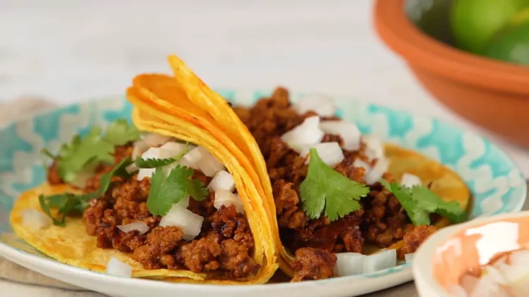

Chorizo Tacos
Let The Party Heat Begin!
Description
Make Chorizo Tacos on the Mexican street-food style. Mixed with Chipotle peppers, this recipe gives these street-style tacos some serious heat.
Ingredients
- 1 chorizo sausage link, casing removed and meat crumbled
- 2 tablespoons chipotle peppers in adobo sauce
- 4 corn tortillas
- 2 tablespoons chopped onion, or to taste
- 2 tablespoons chopped fresh cilantro, or to taste (Optional) It gives more heat ;)
Directions
- Combine crumbled chorizo and chipotle peppers in adobo sauce in a bowl.
- Heat a skillet over medium-high heat; add chorizo mixture and cook until crisp, 5 to 7 minutes.
- Then transfer to a plate, reserving grease in the skillet.
- Heat tortillas in reserved grease in the skillet over medium heat until warmed, 1 to 2 minutes per side.
- Stack 2 tortillas for each taco
- Then fill with chorizo, onion, and cilantro.
- Enjoy your meal!
